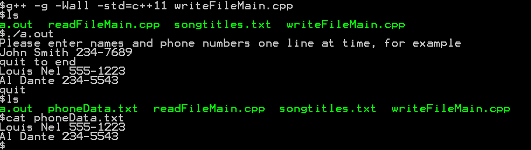
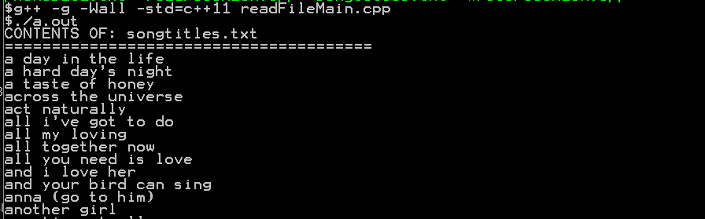

COMP 2404 Fall 2019
Tutorial 02: File IO and Strings
© L.D. Nel 2019
Revisions will be noted here
Description:
The purpose of this tutorial is to familarize you with some simple file I/O in C++ that would be appropriate for assignment #1. Also to get you working with some of the capabilities of the <string> library.
You will need to do some research regarding <fstream> and <string>. Look at the information provided at
http://www.cplusplus.com/reference/fstream/
and
http://www.cplusplus.com/reference/string/string/
Do some google-ing and experiments before coming to the tutorial.
This tutorial is meant to be started as homework. You will not be able to finish if you only start working on it at your tutorial session.
Open the file writeFileMain.cpp in an editor and study the code. Compile and run it and get familiar with what it does. It should prompt your for some information and then write it to a text file. Run the code and then see that the text file phoneData.txt was created and check its contents.
The demo code is using C++11 <string> and <fstream> features. You will have to compile it with -std=c++11 option:
g++ -g -Wall -std=c++11 writeFileMain.cpp
My output looked like this:

The writeFileMainAlternative.cpp file shows an input technique which is much debated. Many books show it as an example of how to read from cin or a file, but many feel it is inherently unsafe and is, in fact, an example of how NOT to do it. Have a look and see what you think. What potential problems do you see?
Next open the file readFileMain.cpp and examine its code. The program reads the lines of text in the file songtitles.txt. These are the song titles from a beatles.db database similar to the test data being used in assignment #1. Compile and run the program. It should open the file, read it contents and print the song titles to the console. My output looked like the following:

Create a new file main.cpp that combines readFileMain.cpp and writeFileMain.cpp so that the program does the following.
1) The program should prompt the user for an input file name and then prompt the user for an output file name.
2) The program should read the lines of text from the input file and then write the lines of text to the output file.
When it has run the output file should be a copy of the input file. Test this using the songtitles.txt file as the input file.
You will notice that the song titles in the songtitles.txt file are all lower case. We want to write a function to convert them to all upper case.
Here is one possible solution for a function added to main.cpp: (I wrote this function after researching the <string> library and some c utility functions that are also included with c++. You should do some googling about iterating through strings and converting characters.
string toUpperCase(string str){
string s;
for(char & c : str){
s.append(1,toupper(c));
}
return s;
}
Modify your main program so that instead of just writing the original song title to the output file like this:
file << input << endl;
instead you write the titles in uppercase like this:
file << toUpperCase(input) << endl;
Test your code to see that the output file now has the song titles in upper case.
Now we get to the real intention. Based on your research about strings write a function that will convert the song titles to "title case". Title case has the following requirements:
1) Each word in the title should start with a capital letter and the remaining letters in the word should be lower case.
2) Any song that starts with "The " should have the "The " moved to the end of the title. For example "The Girl From Ipanema" should become "Girl From Ipanema, The".
Write a function string toTitleCase(string str){...} that does this conversion.
Test it with your program an confirm that the output file now contains the song titles in title case.
Finally we don't want our code filling up with non-object-oriented global functions. We want to create a StrUtils class that will provide some string utility functions. For now just our toUpperCase() and toTitleCase() functions.
Create two files str_utils.h and str_utils.cpp to serve this purpose.
Here is what the two files might look like with just the toUpperCase() function represented.
//str_utils.h
#include <string>
using namespace std;
class StrUtils{
public:
static string toUpperCase(string str);
};
//str_utls.cpp
#include <string>
#include "str_utils.h"
using namespace std;
string StrUtils::toUpperCase(string str){
string s;
for(char & c : str){
s.append(1,toupper(c));
}
return s;
}
It is IMPORTANT to notice the toUpperCase function is declared to be static. That means we can invoke the function by itself and not on some object. An object, or instance, method toUpperCase() would have to be invoked like this:
someObject.toUpperCase(myString);
But a static method of class StrUtils would be invoked like this:
StrUtils::toUpperCase(myString);
So your use of this function in your code might now look like this:
file << StrUtils::toUpperCase(input) << endl;
Make the required changes to main.cpp (which would include str_utils.h now) and recompile and run the code. Remember you will now have to have both main.cpp and str_utils.cpp compiled with your g++ command (like we learned about in Tutorial 01).
When you have finished these Problems demonstrate your work to a tutorial TA to get credit for the tutorial.
If you look at the <string> reference at http://www.cplusplus.com/reference/string/string/ you can find member functions, or methods, size() and length(). According to the reference they both return the same thing: the length of the string in bytes (not in characters). Curiously there appears to be no method that returns the number of characters in a <string> object. What's up with that? Can you explain what the issue is? Can you write a string utility method that does return the number of characters in a string?